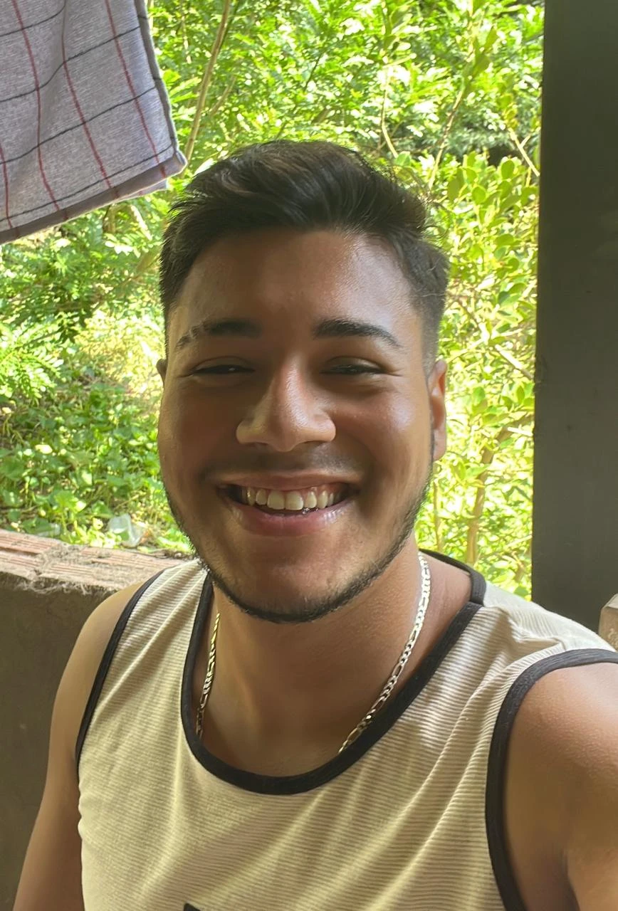
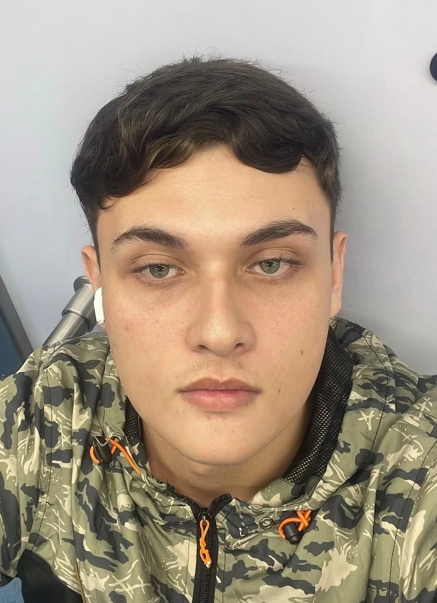

Kauan Gomes dos Santos
- RM
- 574837
- Turma
- 1TDSPB
GitHub [LinkedIn — URL pendente]
Equipe · FIAP Global Solution 2026

GitHub [LinkedIn — URL pendente]

GitHub [LinkedIn — URL pendente]
GitHub [LinkedIn — URL pendente]

Desenvolvimento front-end e direção visual
GitHub [LinkedIn — URL pendente]
